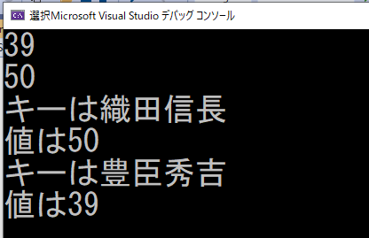

この節では次のプログラムを使用します。次のURLからプログラムをダウンロードしておいてください。 Sample_02_03.zip
mapはキーと値付きで要素を記憶することができるコンテナクラスです。mapに格納されている要素はstd::pair型のオブジェクトです。 mapにはstd::pair型のオブジェクトをinsert()関数を利用することで追加することができます。次のコードを見てください。
// 名前と年齢を記憶できる連想配列を定義する。
std::map< std::string, int > map;
// 豊臣秀吉をキー、39歳を値に持つデータを作成する。
std::pair< std::string, int > data;
data.first = "豊臣秀吉"; // firstがキー。
data.second = 39; // secondが値。
// 作成したデータを連想配列に追加する。
map.insert( data );
// 続いて、織田信長、50歳を値に持つデータを作成する。
data.first = "織田信長"; // firstがキー。
data.second = 50; // secondが値。
// 作成したデータを連想配列に追加する。
map.insert(data);
mapへの要素の追加は次のように記述することもできます。
// 名前と年齢を記憶できる連想配列を定義する。
std::map< std::string, int > map;
// 豊臣秀吉をキー、39を値にもつデータを挿入。
map.insert( {"豊臣秀吉", 39} );
// 織田信長、50歳を値に持つデータを挿入。
map.insert( {"織田信長", 50} );
連想配列に記憶されている要素は、キーを使うことでアクセスすることができます。
std::cout << map["豊臣秀吉"] << "\n"; // 39と表示される。
std::cout << map["織田信長"] << "\n"; // 50と表示される。
mapもイテレータを利用して、for文を回すことができます。
for(
std::map< std::string, int >::iterator it = map.begin();
it != map.end();
it++
){
// イテレーターはmapに格納されている要素を指しているの、std::pair型のオブジェクトを指しています。
// なので、各要素のキーと値にアクセスすることができます。
std::cout << "キーは" << it->first << "\n";
std::cout << "値は" << it->second << "\n";
}
データとデータを関連付けて記憶しておきたい場合。ゲームであれば、例えば読み込み済みのリソースの記録などで利用されます。 値にリソースのファイルパス、値に読み込み済みのリソースなどを記録しておき、使いまわす等の実装が行われることがあります。
mapへのデータの挿入の関数がpush_back()関数ではないことに注意してください。mapにはpush_back()関数はありません。mapはinsert()関数が用意されており、insert()関数が要素を挿入する位置はC++の使用では定義されていません。 つまりどこに挿入されるか不明になっています。 例えば次のコードの場合、織田信長と豊臣秀吉のデータのどちらが先に表示されるか分からないということです。
std::map< std::string, int > map;
// 豊臣秀吉をキー、39を値にもつデータを挿入。
map.insert( {"豊臣秀吉", 39} );
// 織田信長、50歳を値に持つデータを挿入。
map.insert( {"織田信長", 50} );
// 豊臣秀吉が先に表示されるわけではない！！！
for(
std::map< std::string, int >::iterator it = map.begin();
it != map.end();
it++
){
// イテレーターはmapに格納されている要素を指しているの、std::pair型のオブジェクトを指しています。
// なので、各要素のキーと値にアクセスすることができます。
std::cout << "キーは" << it->first << "\n";
std::cout << "値は" << it->second << "\n";
}
mapの実装のされ方は、コンパイラベンダーによって異なりますが、多くのベンダーではキーを参照しての2分木データ構造になっています。 2分木構造になっている理由は、キーを使った要素へのアクセス時間を対数時間にすることができ、高速にすることができるためです。 この詳細については、C++による大規模開発 ～C++標準テンプレートライブラリの利用(応用)～で解説します。
では、さっそくmapを使ってみましょう。Sample_02_03を立ち上げてください。 立ち上がったら、main.cppを開いてください。
mapを利用するためには、まずインクルードを行う必要があります。main.cppにリスト1のプログラムを入力してください。 [リスト1]
//step-1 mapをインクルード
#include <map>
続いて、int型の要素を記録できる可変長配列を定義します。main.cppにリスト2のプログラムを入力してください。 [リスト2]
// 名前と年齢を記憶できる連想配列を定義する。
std::map< std::string, int > map;
// 豊臣秀吉をキー、39を値にもつデータを挿入。
map.insert( {"豊臣秀吉", 39} );
// 織田信長、50歳を値に持つデータを挿入。
map.insert( {"織田信長", 50} );
続いて、キーを使って要素にアクセスしてみましょう。リスト3のプログラムを入力してください。 [リスト3]
// step-3 キーを使って要素にアクセスする。
std::cout << map["豊臣秀吉"] << "\n"; // 39と表示される。
std::cout << map["織田信長"] << "\n"; // 50と表示される。
続いて、for文で回して、mapの各要素を表示してみましょう。main.cppにリスト4のプログラムを入力してください。 [リスト4]
//step-4 for文を使って、mapに格納されているキーと値を表示する。
for (
std::map< std::string, int >::iterator it = map.begin();
it != map.end();
it++
) {
// イテレーターはmapに格納されている要素を指しているの、std::pair型のオブジェクトを指しています。
// なので、各要素のキーと値にアクセスすることができます。
std::cout << "キーは" << it->first << "\n";
std::cout << "値は" << it->second << "\n";
}
では、ここまで実行してみて下さい。図2.4のように表示されていたら実装できています。 [図2.5] 
次の評価テストを行いなさい。 評価テストへジャンプ
次のプロ宇グラムをダウンロードして、プログラム中のコメントと完成動画を参考にして実習を行いなさい。 Question_02_01.zip